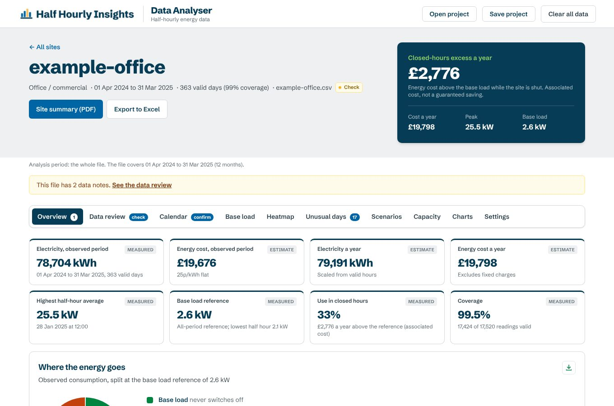

Why not just use AI?
You should use it. We do, every day. The real question is what you still need once every one of your competitors has the same tools.
AI gives everyone the same good answer
Ask an AI tool for a go-to-market plan and you will have one in thirty seconds. It will be tidy and sensible. It will also look a lot like the plan it writes for your competitor down the road.
That is the catch. When everyone can get a decent answer for free, a decent answer stops being an advantage. The advantage moves to knowing which answer is right for your business, in your market, with the team and the margins you actually have.
That is judgement, and it only comes from having done the job. From winning deals, losing them, and working out why. AI makes experienced people faster. It does not make inexperienced decisions right.

Where AI earns its place in a sales team
We are not sceptics. Used well, AI takes hours of desk work out of every week and gives salespeople more time with customers.
Account research
A customer’s annual report, net zero targets and estate news, summarised before a first meeting in minutes instead of an afternoon.
First drafts
Proposals, bid answers and follow-up emails started from a solid draft, so people spend their time improving the argument, not typing it.
Energy data
A first pass through meter data, tariffs and site details to find the patterns worth a closer look, with the numbers checked by a person.
Pipeline hygiene
Spotting deals with no next step, close dates that keep moving and opportunities that have gone quiet.
Meeting notes
Calls summarised into decisions, actions and owners, so nothing agreed with a customer gets lost.
Preparation
Likely objections, questions to ask and a practice run before a big negotiation or board presentation.
Where it falls short
None of these are faults that the next version will fix. They come from what the technology is.
It tends to agree with you
Ask it to improve your plan and it will. It rarely tells you the plan is wrong. A good adviser will.
It only knows what you tell it
It has not seen your real margins, your delivery capacity or the politics inside your customer’s business.
It sounds certain when it is not
A confident paragraph and a correct one look exactly the same. Someone has to know the difference.
It is not accountable
It will not stand in front of your board, own the forecast or look a customer in the eye when a deal gets difficult.
Same question, two answers
Four questions we hear from leadership teams, and what comes back from each source.
“Which sectors should we target?”
A list of six sensible sectors, each with a growth story and a reason to go after it.
Which two you can win with the references, delivery team and prices you have today. And which four to drop.
“Is this bid worth chasing?”
A neat score against whatever criteria you give it.
Who wrote the specification? Have you met the buyer? If the answers are a competitor and no, save the three weeks.
“Why is our pipeline not converting?”
Improve qualification, follow up faster, sharpen the proposition. All true, all generic.
Sit in the pipeline review, and within an hour it is clear which deals nobody in the room really believes in.
“What should we charge?”
A pricing framework and a spread of market benchmarks.
What this customer will pay, what the funder will accept, and the margin you will still have once delivery has finished.
You pay for judgement, not desk time
- Research and analysis, faster. Market reviews and data work that used to take days now take hours, so more of your budget goes on the thinking.
- Tools, not just advice. We used AI-assisted development to build the UK Solar Calculator and Half Hourly Insights. See the case studies.
- Everything is checked. Nothing reaches you or your customers without being read, tested and challenged by someone who knows the market.
- Your information stays yours. We do not put your pricing, contracts or customer data into public AI tools.

Getting AI into your sales team, sensibly
Most teams are already using it, quietly and unevenly. We help you make that deliberate.
Pick the jobs
Start with research, drafting and admin, where the time saving is obvious and a mistake is easy to catch.
Set the rules
What information can go in, what must always be checked, and who signs off anything a customer will see.
Keep the judgement human
Qualification, pricing and negotiation stay with people. That is where deals are won and margin is protected.
How AI is changing B2B energy sales
Our longer view on what AI means for salespeople, buyers and sales leaders in energy.

Want a sensible plan for AI in your sales team?
Or just a second opinion on a plan an AI tool wrote for you. Either way, start with a conversation.